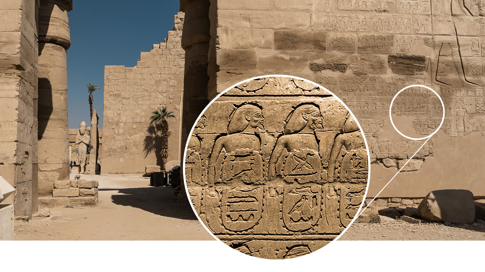
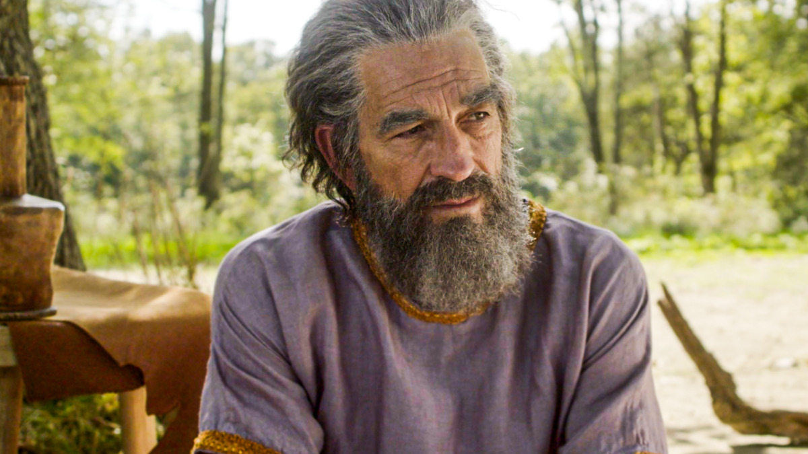

5 Abraão
Ele enfrentou seu maior desafio
Quando Jeová pediu para Abraão fazer algo que um pai amoroso jamais faria, como ele encontrou coragem para obedecer?
Hebreus 11:11, 12, 17-19
Para considerar
De que maneiras Abraão mostrou coragem nessa época de sua vida?
Pontos de resposta esperados
- Obedeceu de imediato: partiu decidido e se levantou de manhã cedo, sem adiar (P1; Gên. 22:3).
- Sustentou a decisão durante toda a viagem, com passos “lentos, mas firmes” (P1).
- Não deixou a pergunta “como Deus poderia pedir isso?” virar desconfiança (P2).
- Raciocinou em cima do que já sabia e concluiu que Jeová ressuscitaria Isaque (P5; Heb. 11:19).
- Falou com convicção antes de ver qualquer resultado: disse aos servos que os dois voltariam (P6; Gên. 22:5).
- Foi até o fim: amarrou o filho, colocou no altar e estendeu o braço com a faca (P6; Gên. 22:10).
- Some a coragem de Isaque, que se deixou amarrar podendo resistir (P6).
Perguntas de seguimento Etapa 3
- O que Abraão já sabia sobre Jeová antes de sair de casa?
O que se quer ouvir: Que Jeová é justo e misericordioso, por causa de Sodoma, e que nada é impossível para ele, por causa do nascimento de Isaque. - Qual momento foi o mais difícil: sair de casa, andar três dias ou subir o monte? Por quê?
O que se quer ouvir: Não existe resposta errada. O objetivo é a assistência perceber que a coragem foi exigida em vários momentos, e não só um. - O que ele disse aos servos, e o que essa frase mostra?
O que se quer ouvir: “Depois retornaremos a vocês.” Mostra que ele contava com a ressurreição, e que falou isso em voz alta antes de ver o resultado.
Analise mais a fundo
-
Como sabemos que Abraão realmente existiu?
(g 5/12 18, quadro; it “Abraão” §§ 22-23) A
Pontos de resposta esperados
- Tabuinhas de argila do início do segundo milênio AEC (antes da Era Comum) alistam cidades com nomes de parentes dele: Pelegue, Serugue, Naor, Tera e Harã (Gên. 11:17-26).
- As ruínas de “Ur dos Caldeus” foram descobertas no sudeste do Iraque (Gên. 11:31).
- Harã, onde Tera morreu, provavelmente fica hoje na Turquia, e Hébron, onde Sara morreu, é uma das cidades habitadas mais antigas do Oriente Médio (Gên. 11:32; 23:2).
- O relevo em Karnak, no Egito, menciona o “Campo de Abrão” (imagem A).
- A arqueologia confirma costumes presentes no relato: a compra de um campo dos hititas, a escolha de Eliézer como herdeiro e o tratamento dado a Agar.
- Jesus e seus discípulos se referiram a Abraão mais de 70 vezes, e Paulo apoia nele o ensino da justiça pela fé (Rom. 4:1-12).
Perguntas de seguimento Etapa 1
- Por que faz diferença para a nossa fé saber que Abraão foi uma pessoa de verdade?
O que se quer ouvir: Porque a Bíblia apoia ensinos importantes na vida dele. Se fosse lenda, o ensino de Paulo sobre a fé cairia junto. - Se um vizinho dissesse que isso é lenda, qual prova você usaria primeiro?
O que se quer ouvir: As ruínas de Ur, os nomes dos parentes nas tabuinhas ou o relevo de Karnak. Serve para mostrar que temos resposta simples e objetiva.

ARelevo em Karnak, no Egito, que menciona o “Campo de Abrão” -
Como Abraão talvez tenha aprendido sobre Jeová?
(ia 26 §§ 4-5)
Pontos de resposta esperados
- Provavelmente por meio de Sem, filho de Noé.
- Noé se referiu a Jeová como o “Deus de Sem”, o que mostra o respeito de Sem pela adoração pura (Gên. 9:26).
- Sem havia presenciado mais de 400 anos de história: o mundo antes do Dilúvio, o Dilúvio, a formação das nações e a rebelião em Babel, na qual não se envolveu.
- A família de Sem continuou falando a língua original, e Abraão era dessa família.
- Sem continuou vivo durante a maior parte da vida de Abraão: as duas vidas coincidiram por 150 anos.
Perguntas de seguimento Etapa 1
- Sem tinha visto Jeová agir por centenas de anos. Quem faz esse papel na nossa congregação hoje?
O que se quer ouvir: Os irmãos mais idosos, e os pais e avós que aprenderam a verdade primeiro. - O que a gente perde quando não conversa com esses irmãos?
O que se quer ouvir: Perdemos casos reais de Jeová agindo, que é justamente o material que dá coragem depois. - E se você é esse irmão idoso, o que você viu Jeová fazer que os mais novos precisam ouvir?
O que se quer ouvir: Deixe a pessoa contar. É a parte mais rica da consideração, e valoriza quem tem mais idade.
-
Por que Jeová aceitou a adoração de Abraão?
(rr 20 § 18)
Pontos de resposta esperados
- Porque a adoração dele cumpriu os quatro requisitos principais da adoração pura, e não foi mera formalidade.
- Adorou somente a Jeová, o único que merece adoração (Gên. 12:8; 13:18).
- Ofereceu o melhor que tinha: estava disposto a dar o filho amado (Gên. 22:2).
- Fez do modo que Jeová determinou, obedecendo nos mínimos detalhes (Gên. 22:9-12).
- Agiu com motivação pura, por fé: “Abraão depositou fé em Jeová, e isso lhe foi creditado como justiça” (Rom. 4:3).
- E fez tudo isso cercado de adoração falsa em Ur, onde havia um templo ao deus-lua Nana e até o pai dele adorou deuses falsos (Jos. 24:2).
Perguntas de seguimento Etapa 4
- Dos quatro requisitos, qual costuma ser o mais difícil para nós hoje?
O que se quer ouvir: Em geral, dar o melhor e fazer do modo que Jeová quer, porque exige abrir mão de algo nosso. - Por que o motivo do coração pesa mais que o ato em si?
O que se quer ouvir: Caim ofereceu e não foi aceito; Abel ofereceu com fé e foi. O ato era parecido, o coração não. - Como isso muda o jeito de nos preparar para as reuniões e para o campo?
O que se quer ouvir: Adoração pura não é presença, é preparo e coração. Envolve a vida toda, não um momento.
-
Como a promessa de Jeová a Abraão em Gênesis 22:17 confirma que a Bíblia é cientificamente correta?
(g88 8/4 25) B
Pontos de resposta esperados
- A comparação entre as estrelas e os grãos de areia só é exata se as estrelas forem bilhões, e hoje se sabe que são.
- Isso era desconhecido na antiguidade: a olho nu se vê entre 2.000 e 4.000 estrelas, e cerca de 6.000 brilham o bastante para serem vistas sem telescópio.
- Nenhum escritor humano da época teria escolhido essa comparação por conta própria.
- A explicação de que Abraão teria usado lentes primitivas não tem evidência: não há prova de que os antigos observassem estrelas assim, nem de que ele ou o escritor de Gênesis tivessem acesso a uma.
- A explicação simples é a inspiração divina (2 Tim. 3:16), e Jeremias 33:22 registra observação semelhante.
Perguntas de seguimento Etapa 1
- Como esse detalhe aumenta a confiança nas outras promessas da Bíblia?
O que se quer ouvir: Se Jeová estava certo numa coisa que ninguém podia conferir na época, podemos confiar no que ele promete para o futuro. - Abraão não tinha como conferir aquela promessa. O que ele precisou ter?
O que se quer ouvir: Confiança em quem falou. É isso que a Bíblia chama de fé.
BO céu de estrelas sobre a areia da praia
Medite no que aprendeu
Como a esperança de Abraão deu coragem a ele? Como a nossa esperança pode nos ajudar a ser corajosos? C
Pontos de resposta esperados
- A esperança dele era específica: a ressurreição. Ele concluiu que Deus era capaz de levantar Isaque dentre os mortos (Heb. 11:19).
- Com isso, a perda passou de definitiva para temporária, e ele pôde dizer aos servos “depois retornaremos a vocês” (Gên. 22:5).
- A esperança dele tinha base no que já havia visto: Isaque nasceu de um corpo “como que morto” (P4).
- Com a gente funciona igual: ninguém tem coragem para uma perda que considera permanente, mas quase todos encaram uma perda que sabem ser temporária.
- Casos práticos: a morte de alguém amado, uma decisão médica que respeita a lei de Deus, perder o emprego por integridade (veja a imagem C).
Perguntas de seguimento Etapa 2
- A esperança de Abraão era só um sentimento bonito, ou era algo que ele já tinha visto acontecer?
O que se quer ouvir: Já tinha visto: Isaque nasceu quando era impossível. A esperança dele tinha base em fato. - Que perda hoje parece definitiva, mas a Bíblia diz que é temporária?
O que se quer ouvir: A morte de quem amamos. E também saúde, trabalho e bens, que são passageiros. - Como manter essa esperança viva no dia a dia, e não só na hora do enterro?
O que se quer ouvir: Lendo os relatos de ressurreição, falando disso em família e na pregação, e lembrando o que Jeová já fez por nós.
De que maneiras podemos imitar a coragem de Abraão e oferecer um sacrifício a Jeová quando . . .
vemos uma oportunidade de dar testemunho? (Heb. 13:15)
Pontos de resposta esperados
- O testemunho é chamado de sacrifício: “o fruto dos nossos lábios, que fazem declaração pública do seu nome”.
- O custo não é tempo nem dinheiro, é vencer o medo do que a pessoa vai pensar.
- Como Abraão, falamos primeiro e vemos o resultado depois.
- Oportunidades: o colega que comenta uma tragédia, o vizinho que pergunta por que você não participou de uma festa religiosa, a conversa na fila ou no hospital.
decidimos como usar nossos bens materiais? (Pro. 3:9)
Pontos de resposta esperados
- “Primícias” é o primeiro e o melhor da colheita, separado antes do resto ser usado, e não o que sobra.
- Abraão foi convidado a dar o que mais amava, não o excedente.
- Na prática: donativos planejados primeiro, e não com o que restar do mês.
- Também vale para a agenda: reuniões e serviço de campo entram antes do resto, não depois.
- E para gastos próprios ao servir onde há mais necessidade, como ajudar numa construção ou numa mudança de congregação.
ficamos sabendo que nossos irmãos precisam de ajuda? (Fil. 4:18)
Pontos de resposta esperados
- O que os filipenses entregaram a um irmão, Jeová registrou como oferta a ele mesmo: “um sacrifício aceitável, de aroma suave”.
- Hebreus 13:16 confirma: “Deus se agrada desses sacrifícios.”
- Na prática: socorro depois de enchente ou incêndio, ajuda a um irmão desempregado, transporte para irmãos idosos, hospedagem.
- A coragem aqui está em assumir um custo que ninguém vai ver nem elogiar.
Perguntas de seguimento Etapa 4
- Se o testemunho não custa dinheiro, o que ele custa?
O que se quer ouvir: Custa vencer o medo do que a pessoa vai pensar. É por isso que a Bíblia chama isso de sacrifício. - Onde você teria uma chance de falar esta semana?
O que se quer ouvir: Vizinho, sala de espera, feira, parente. O objetivo é sair com um lugar concreto na cabeça.
Perguntas de seguimento Etapa 4
- Qual é a diferença entre dar o primeiro e dar o que sobra?
O que se quer ouvir: Primícias é separado antes de tudo. O que sobra é o que ninguém planejou dar. - O que na nossa rotina mostra o que está em primeiro lugar?
O que se quer ouvir: A agenda e o orçamento. O que entra primeiro neles é o que a gente honra de verdade.
Perguntas de seguimento Etapa 4
- Por que Jeová considera oferta a ele o que entregamos a um irmão?
O que se quer ouvir: Porque ele ama seu povo. O que é feito a um irmão, ele conta como feito a ele mesmo. - Você conhece alguma necessidade agora que talvez ninguém esteja vendo?
O que se quer ouvir: Deixe a assistência mencionar casos concretos, sem citar nomes.
De que outras maneiras você pode imitar a coragem que Abraão mostrou nesse relato?
Pontos de resposta esperados
- Obedecer no mesmo dia, sem procurar desculpa, como ele fez aos 99 anos na ordem da circuncisão (Gên. 17:23).
- Levar as dúvidas a Jeová em oração, com humildade, em vez de guardá-las ou comentá-las com outros (Gên. 18:22-33).
- Ensinar a família antes da prova: a cooperação de Isaque no monte veio de anos de instrução (Gên. 18:19).
- Aceitar ser diferente das pessoas ao redor, como ele e Sara foram em Ur.
- Continuar guardando na mente o que Jeová faz, para ter de onde tirar coragem depois (P9).
Perguntas de seguimento Etapa 3
- Abraão obedeceu “naquele mesmo dia”. O que costuma nos fazer adiar?
O que se quer ouvir: Medo, vergonha, cansaço, ou a esperança de que a situação se resolva sozinha. - Isaque colaborou por causa de anos de ensino. O que isso pede dos pais e avós hoje?
O que se quer ouvir: Ensinar nos dias comuns, e não só quando o problema aparece.
Pense no quadro completo
O que esse relato me ensina sobre Jeová?
Pontos de resposta esperados
- Jeová não pede o que ele mesmo não estaria disposto a dar: ele deu o próprio Filho (P8; João 3:16).
- Ele conhece o custo antes de pedir: “Jeová sabia o quanto Abraão amava Isaque” (P2).
- Ele interrompe no limite exato e providencia o substituto (Gên. 22:12, 13).
- Ele reconhece e elogia a lealdade, e reforça a promessa com juramento (Gên. 22:16).
- Ele é paciente com quem tem dúvida sincera, como foi no caso de Sodoma (P3).
Perguntas de seguimento Etapa 5
- Se Jeová sabia o quanto aquilo doía, por que ele pediu?
O que se quer ouvir: Porque o pedido tinha um objetivo que Abraão só entenderia depois, e porque Jeová sabia que aquilo não prejudicaria Abraão para sempre. - O que o carneiro na moita mostra sobre o jeito de Jeová ajudar?
O que se quer ouvir: A ajuda dele veio depois do passo de obediência, e não antes. - Qual dessas coisas sobre Jeová você mais precisa lembrar esta semana?
O que se quer ouvir: Resposta pessoal. Serve para fechar a parte de coração da consideração.
Como esse relato está relacionado com o propósito de Jeová?
Pontos de resposta esperados
- É aqui que a promessa alcança todo mundo: “todas as nações da terra obterão para si uma bênção por meio do seu descendente” (Gên. 22:18).
- Esse Descendente é Cristo, e com ele os que lhe pertencem (Gál. 3:16, 29).
- O objetivo de Deus ao fazer daquela família uma nação era produzir o Messias, que daria a vida pela humanidade.
- A promessa ainda não terminou de se cumprir, e vai trazer bênçãos que duram para sempre (P8).
- A cena ilustra o resgate: um pai que oferece o filho amado, um substituto providenciado por Deus e um monte onde “se providenciará” (Gên. 22:14).
Perguntas de seguimento Etapa 5
- Onde nós entramos nessa promessa feita a Abraão?
O que se quer ouvir: Somos parte de “todas as nações” que são abençoadas por meio do Descendente, que é Cristo. - Que parte da promessa ainda não se cumpriu?
O que se quer ouvir: As bênçãos completas para todas as nações, que virão no Reino de Deus.
O que eu gostaria de perguntar para Abraão ou Isaque quando eles forem ressuscitados?
Pontos de resposta esperados
- Aqui a resposta é pessoal, não existe uma certa. Algumas que costumam surgir:
- O que passou pela sua cabeça nas noites daqueles três dias?
- Vocês conversaram no caminho, ou o silêncio tomou conta?
- Isaque, em que momento você entendeu que a ovelha era você, e por que não resistiu?
- Como vocês contaram isso a Sara quando chegaram em casa?
- O que veio à sua mente sobre aquele dia quando você soube do resgate de Jesus?
Perguntas de seguimento Etapa 2
- O que a sua pergunta mostra sobre o que mais te marcou neste relato?
O que se quer ouvir: Ajuda cada um a perceber onde o coração dele foi tocado. - Depois de tudo, qual lição de Abraão você quer levar para esta semana?
O que se quer ouvir: Esta é a melhor pergunta de encerramento: puxa a aplicação pessoal.
Aprenda mais

Veja esse relato emocionante ganhar vida.
Vídeo “Imite a sua fé, Abraão, parte 2” (11:10), disponível no jw.org.
Como Abraão se tornou amigo de Jeová, e como você pode fortalecer sua amizade com Deus?
“Jeová o chamou de ‘meu amigo’” (w16.02 8-12).
Roteiro de 30 minutos
Montado na mesma ordem de uma consideração real desta matéria. Os tempos são referência: o que passar de um item, tire do outro.
Abertura com uma pergunta pessoal
“Qual foi o maior desafio da sua vida? Talvez alguém aqui esteja passando por ele agora mesmo.” Depois diga onde o estudo vai chegar: como a fé em Jeová dá coragem para atravessar o desafio.
Leitura dos parágrafos
Designe um irmão para ler os nove parágrafos, do começo ao fim. Agradeça e faça uma ponte curta: “agora vamos abrir a Bíblia para ver alguns trechos do relato”.
Três leituras da Bíblia com a assistência
Chame três pessoas diferentes, uma para cada texto:
- Gênesis 22:1-5, o pedido e a saída de manhã cedo
- Gênesis 22:16-18, o juramento e a bênção para todas as nações
- Hebreus 11:17-19, a conclusão dele sobre a ressurreição
Para considerar
“De que maneiras Abraão mostrou coragem nessa época de sua vida?” Aceite dois comentários. Se vier só a resposta óbvia (“ele ia sacrificar o filho”), complete: ele decidiu de manhã cedo, sustentou por três dias e falou com convicção aos servos. E use a frase: a fé dele não era cega, ela o ajudou a ver.
Analise mais a fundo, as quatro perguntas
Um comentário por pergunta, dois no máximo. Na pergunta 1, peça também que alguém comente a imagem A (o relevo de Karnak). Na pergunta 4, deixe alguém explicar por que a comparação das estrelas com a areia só funciona se as estrelas forem bilhões.
Medite no que aprendeu, a parte principal
Divida assim:
- 3 min: a esperança de Abraão, e a nossa. Peça a alguém para descrever a imagem C (o viúvo olhando a foto e se vendo com a esposa no Paraíso).
- 3 min: os três sacrifícios, um comentário cada: testemunho, bens materiais e ajuda aos irmãos.
- 3 min: “de que outras maneiras podemos imitar essa coragem?” Aqui a assistência costuma dar os melhores comentários. Deixe três ou quatro pessoas falarem.
Volte à imagem do monte e faça a pergunta do destaque
Peça para os irmãos olharem a imagem de Abraão e Isaque subindo, e leia a pergunta que está no meio do capítulo: “quando Jeová pediu para Abraão fazer algo que um pai amoroso jamais faria, como ele encontrou coragem para obedecer?” Deixe alguém notar que ele está olhando para o céu. Amarre: a esperança é que deu a coragem.
Pense no quadro completo
Duas perguntas, um comentário cada: o que aprendemos sobre Jeová (leve a João 3:16) e como o relato se liga ao propósito dele (o Descendente, que é Cristo).
Última pergunta e encerramento
Um comentário sobre o que cada um perguntaria a Abraão ou Isaque. Depois recomende o vídeo “Imite a sua fé, Abraão, parte 2” e feche com a ideia: não importa o tamanho da montanha que a gente tem para subir; com a mesma fé e a mesma esperança de Abraão, dá para subir.
Se o tempo apertar
Pode cortar: o segundo comentário das perguntas de pesquisa, e a leitura de Gênesis 22:16-18.
Não pode faltar: a esperança da ressurreição como fonte da coragem (parágrafo 5), a pergunta do destaque com a imagem do monte, e o que o relato mostra sobre o amor de Jeová (parágrafo 8).
Resumo: os pontos altos deste estudo
Para usar no encerramento da consideração, ou para revisar depois em casa.
O caminho que percorremos
- Guardar o que Jeová já fez. Abraão guardou duas lições: Jeová é justo e misericordioso, e nada é impossível para ele. P3, P4
- Ter uma esperança certa. Essas lições viraram uma conclusão firme: mesmo que Isaque morresse, Jeová o ressuscitaria. P5
- Ter coragem de obedecer. Essa esperança o fez sair de casa, andar três dias e ir até o último gesto no monte. P1, P6
- Oferecer a Jeová o melhor. Jeová aceitou aquela adoração e respondeu com elogio e juramento. P7, P9
- Ver o coração de Jeová. O monte mostra o que custou a Deus dar o próprio Filho por nós. P2, P8
Os oito pontos altos
- A coragem de Abraão não nasceu no monte. Ela foi construída anos antes, na convivência com Jeová.
- Duas frases para levar para casa: “Jeová é justo e misericordioso” e “para Jeová, nada é impossível”.
- Ele sentia medo, e o medo não paralisou ele. Sentir medo não é falta de fé.
- Conhecimento + obediência = fé forte. E oração é o que mantém a amizade viva.
- A esperança da ressurreição transformou uma perda definitiva em perda temporária. Foi ela que deu coragem.
- Ele obedeceu até o fim, e a provisão de Jeová veio depois do passo, não antes.
- Jeová nunca mais pediu a ninguém o que pediu a Abraão. O que continua valendo é o princípio: a fé nele dá coragem para obedecer.
- O relato também mede o amor de Jeová: Abraão desceu o monte com o filho vivo, e Jeová não teve essa saída.
Três frases para o encerramento
- “Se a fé de Abraão cresceu por lembrar do que Jeová já tinha feito, a nossa cresce do mesmo jeito.”
- “Comece por uma lista: escreva as vezes em que você viu Jeová ajudar você.”
- “Na próxima decisão difícil, você não vai começar do zero. Vai começar por essa lista.”
Texto do capítulo, imagens e versículos: jw.org e wol.jw.org. Bíblia: Tradução do Novo Mundo da Bíblia Sagrada (Edição de Estudo), 674 versículos incluídos nesta cópia para funcionar sem internet.
Publicações consultadas nas anotações: Despertai! 5/2012 p. 18; Estudo Perspicaz, verbete “Abraão”; Imite a Sua Fé cap. 3; A Adoração Pura de Jeová É Restaurada! cap. 2; Despertai! 8/4/1988 p. 25; A Sentinela de fev. 2016, “Jeová o chamou de ‘meu amigo’”.
As anotações coloridas são notas de preparação pessoal, não material publicado pelas Testemunhas de Jeová. Todo material citado é propriedade da Watch Tower Bible and Tract Society, reproduzido aqui para estudo pessoal.